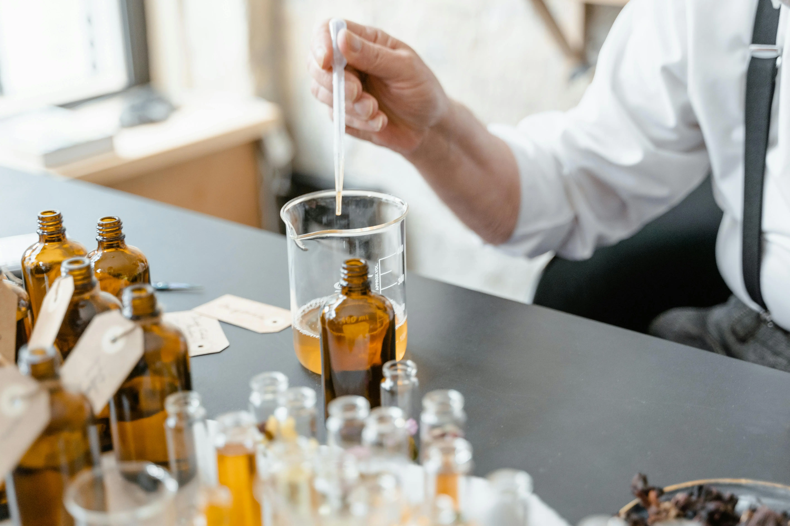
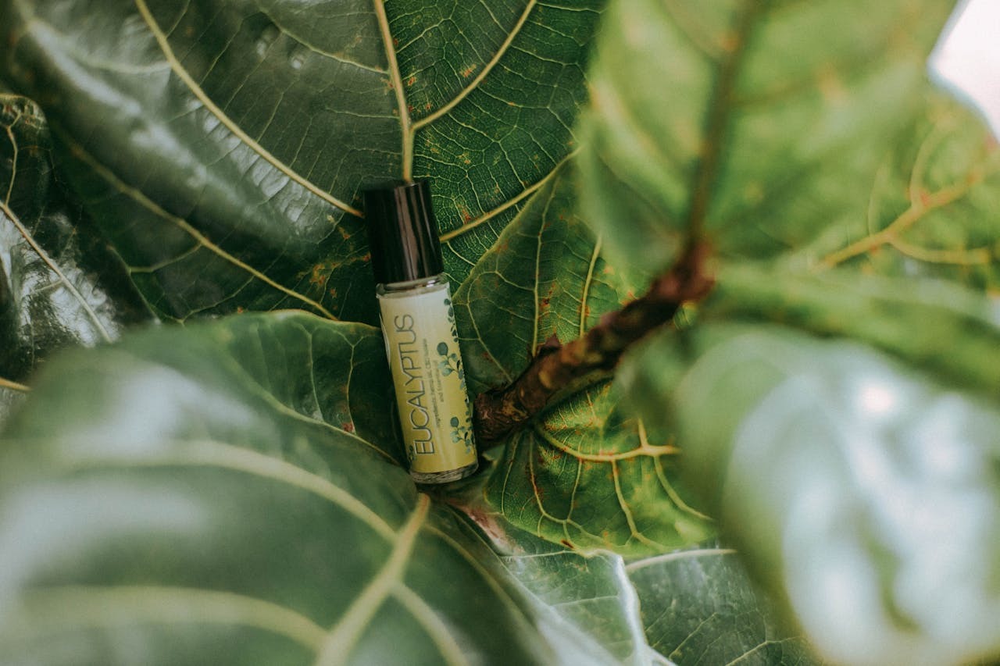
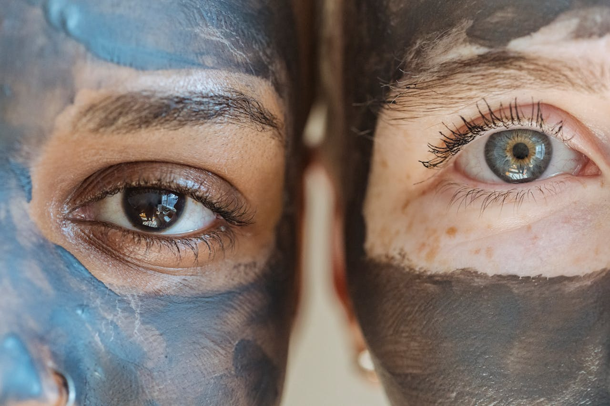
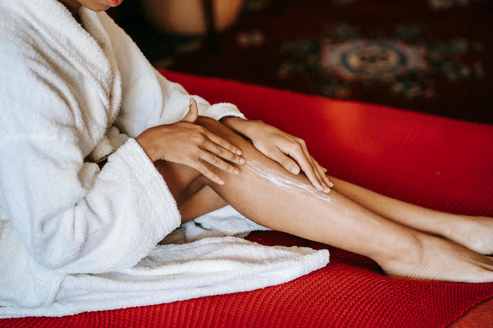

Fundamentos
Aprenda os princípios da dermatologia e da cosmetologia natural, entenda como a pele funciona e interage com os ingredientes cosméticos.
Aprenda os princípios da dermatologia e da cosmetologia natural, entenda como a pele funciona e interage com os ingredientes cosméticos.
Explore o poder das plantas e dos óleos essenciais na
cosmética natural.
Aprenda a criar extratos botânicos eficazes e a aplicar os
princípios da aromaterapia com foco na pele e no bem-estar.
Descubra os ingredientes-chave da cosmética. O poder das argilas, a segurança dos conservantes e tudo sobre os ingredientes funcionais aprovados pelas certificadoras. Compreenda como garantir estabilidade, segurança e eficácia nas formulações.
Ponha as mãos na massa com fórmulas práticas e eficazes para
criar cremes faciais, hidratantes corporais, bálsamos,
desodorizantes e muito mais.
Estes módulos aplicam os conhecimentos teóricos para
resultados reais e personalizados.

Aprenda os fundamentos cosméticos. Descubra a estrutura da pele e do cabelo e como os ingredientes interagem, criando produtos eficazes e conscientes.

Aprenda a utilizar extratos botânicos na cosmética natural. Descubra como extrair, aplicar e potencializar os ativos das plantas para criar produtos eficazes e sustentáveis.

Aprenda a usar óleos essenciais na cosmética natural com segurança e eficácia. Saiba escolher, diluir e combinar aromas terapêuticos para criar produtos únicos e certificados.

Descubra argilas, conservantes e ingredientes essenciais da cosmética natural. Aprenda a formular produtos seguros, eficazes e aprovados por certificadoras.

Aprenda a criar champôs, máscaras e séruns capilares naturais. Formule produtos adaptados a cada tipo de cabelo com ingredientes certificados, eficazes e seguros.

Aprenda a formular cremes, séruns e tónicos faciais naturais. Crie produtos eficazes para todos os tipos de pele com ingredientes certificados e seguros.

Aprenda a formular loções, bálsamos e esfoliantes corporais naturais. Crie produtos que nutrem e protegem a pele com ingredientes certificados e sustentáveis.

Aprenda a criar desodorizantes naturais eficazes e seguros. Formule bálsamos, cremes e sticks sem alumínio, adaptados a vários tipos de pele.